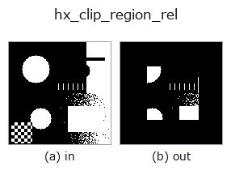

halcon_ext op• データ種: region → region
• 呼び出し: fullseye.apply(img, "hx_clip_region_rel", a=0.5, b=0.5) (2-D は 1 画像 + 2 スカラつまみ a,b∈[0,1] のモデル)
• HALCON 相当: clip_region_rel(意味・パラメータは HALCON リファレンスが参考になる)

*図は合成の入力 128×128 で実際に走らせた出力。左が入力、右が出力。点群は上から見た散布(明るさ = z)、1-D 列は折れ線、体積は z 方向の最大値投影、動画は中央フレーム、複素画像は振幅、絵にならない返り値は値そのもの。*
つまみ a を振る(0.1 / 0.5 / 0.9、もう一方は既定):
▸ hx_clip_region_rel: knob a sweep (docs site)
*つまみ b は出力を変えない(実測: 0.1 / 0.5 / 0.9 で同一)。*
段階(前置きの op → この op。左から順):
▸ hx_clip_region_rel: stages (docs site)
別の画像でも(合成シーン / 写真 / 硬貨。上段が入力、下段がその出力。つまみは既定):
▸ hx_clip_region_rel: other inputs (docs site)
region をその外接矩形に対し相対的にクリップ(各辺から a の割合を削る)。
`v > 0.5 の region の外接矩形 [y0, y1] × [x0, x1] を求め、その高さ・幅の 0.5*a` ずつを上下左右から
削った内側の矩形に含まれる画素だけを残して 0/1 の float 配列で返す。
• `a → 各辺から削る割合 my = int((y1-y0)*0.5*a)、mx = int((x1-x0)*0.5*a)`。a=0 で無変化、a=1 で
外接矩形の中心線付近(1 行・1 列程度)しか残らない。
• `b` は未使用。
• region が空なら空のまま返す。
削るのは外接矩形に対する相対量なので、region の大きさが違っても「周辺 x% を落とす」意味が保たれる。外接矩形は
region 全体で 1 つ(成分ごとではない)ため、離れた小成分が並ぶ場合は端の成分がまるごと消えることがある。
画像基準の中央矩形で切るなら `hx_rectangle1_domain` との論理積を使う。
• gallery2d_halcon_ext ファミリ ガイド
• サンプルデータ カタログ(DL URL / ライセンス) — 2-D は skimage.data(BSD/public)+ 合成、3-D は実データ源(Stanford/PDS 等)の DL URL。
• 演算子の来歴・参考文献 — この op 族の元になった研究/手法の出典。
• アルゴリズムの正典(著者・年)と用途は上記ファミリ使い方ガイドに記載。
下のプログラムは実際に走ることを確かめてある(図と同じ入力)。Studio のヘルプではこのブロックがボタンになり、その場で読み込んで実行できる。
threshold 0.50 0.50 hx_clip_region_rel 0.50 0.50
▸ Load this pipeline · Load & run
• gallery2d_halcon_ext — py -3.11 examples/gallery2d_halcon_ext.py
region を入力に取れる)identity · reg_erode · reg_dilate · reg_open · reg_close · fill_holes · select_largest · remove_small
halcon_ext)hx_gen_circle · hx_gen_ellipse · hx_gen_rectangle2 · hx_gen_checker_region · hx_gen_grid_region · hx_gabor · hx_fit_surface1 · hx_fit_surface2
*Provenance: ops.py — 2D operator registry. この per-op ノートは tools/opdocs.py md が自動生成(手編集しない)。*
© 2026 Kazufumi Furuse — Fullseye operator documentation. Licensed under Apache-2.0.
{kind=link}
{kind=link}
{kind=link}